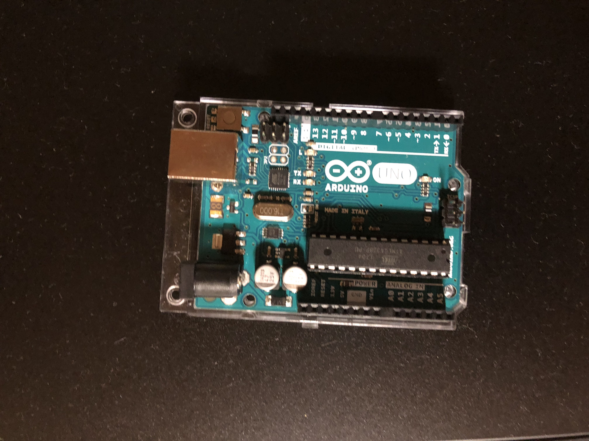

This is a Arduino part.
this page,I will tell,How to use an Arduino,and put template of Arduino program.
this page,I will tell,How to use an Arduino,and put template of Arduino program.
we did blinking LEDs by Arduino.
THis is a program.
void setup() {
// put your setup code here, to run once:
Serial.begin(9600);
pinMode(13,OUTPUT); // 13th pin is output pin.
}
void loop() {
// put your main code here, to run repeatedly:
digitalWrite(13,HIGH); // 13th pin "ON".
delay(100); // wait 1 second.
digitalWrite(13,LOW); // 13th pin "OFF".
delay(100);
}

We made a program. that use for function, then We can chenge power little by little.
int i; // inport "i"
void setup() {
// put your setup code here, to run once.
Serial.begin(9600);
pinMode(9,OUTPUT) //9th pin can analog write.
}
void loop() {
for(i=0,i <=255,i++){ //if i is less than 255,i will increse.
analogWrite(9,i);
delay(5);
}
}
![[ICT School]](images/ICT_School.jpg)
Nomaly PWM use analogwrite. This time use digitalwrite.